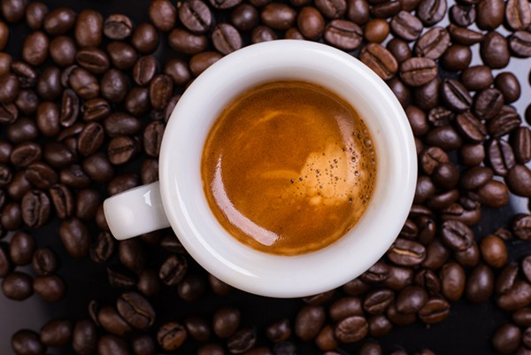

Outside of work and coding, i make time for things i enjoy most. I'm an avid gym-goer, As staying active it's important to me, and i love playing football whenever i get the chance. Another passion of mine is history, i'm always reading books or watching documentaries on the subject. There's something about diving deep into the past that fascinates me and gives me perspective on the present.
On weekends, i enjoy getting hands-on with various DIY projects, particularly building items like epoxy resin tables and chopping boards or all sorts of stuff. it's a creative a creative outlet that let's me work with my hands and bring something tangible to life
And of course, there is nothing better than going out to unwind with a great espresso.
